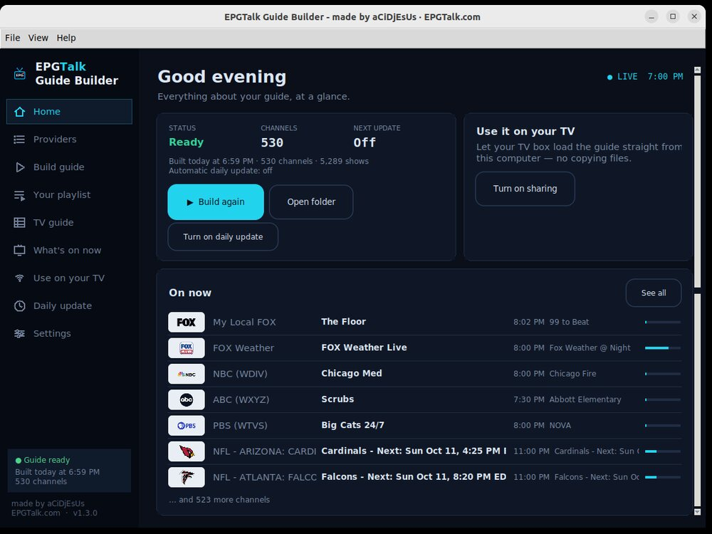
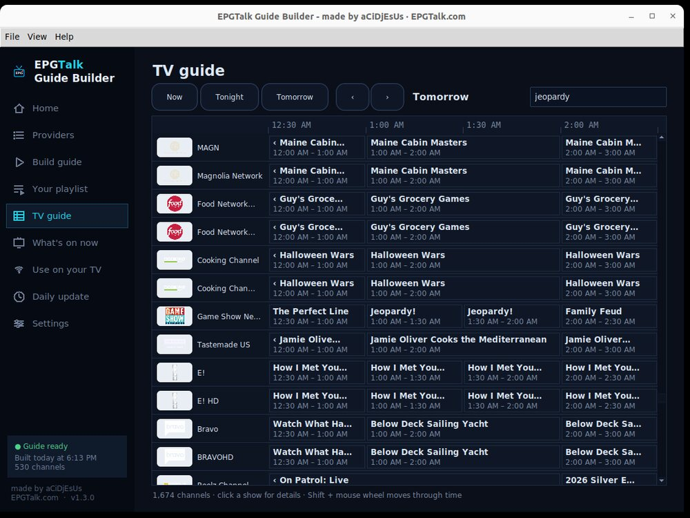

Guide Builder
Make your own TV guide for your IPTV app. Pick your TV provider and channels, press Build — TiviMate, IPTV Smarters, Kodi, Plex, Jellyfin and more get full listings with logos.
For Windows 10/11 and Ubuntu / Debian / Mint.


What it does
How it works
The first time you open it, a short setup wizard walks you through all three.
📖 Step by step for TiviMate, Plex, Jellyfin, Emby, Channels DVR, Kodi and xTeVe / Threadfin: Player Setup →
On your NAS
The same Guide Builder as a Docker container: it updates your guide 24/7 with no computer left on, and you manage it from any browser — even your phone. Synology, QNAP, Unraid, TrueNAS, Raspberry Pi…
- On a Synology: open Container Manager → Project → Create. Name it
epgtalk-builder, pick a folder, choose Create docker-compose.yml and paste this:
services:
epgtalk-builder:
image: ghcr.io/acidjesuz/epgtalk-builder:latest
container_name: epgtalk-builder
ports:
- "8765:8765"
environment:
- TZ=America/New_York
volumes:
- ./config:/config
restart: unless-stopped- Change
America/New_Yorkto your time zone (likeAmerica/ChicagoorAmerica/Los_Angeles), then Next → Done. - Open http://YOUR-NAS-IP:8765 in any browser. Pick your provider and channels — or restore the backup from your desktop app (Settings → Back up) and everything comes over.
- Type http://YOUR-NAS-IP:8765/guide.xml.gz into TiviMate (or …/guide.xml into Plex, Jellyfin, Emby). Done — it updates every day by itself.
Anything else with Docker:
docker run -d --name epgtalk-builder --restart unless-stopped -p 8765:8765 \ -e TZ=America/New_York -v /path/to/epgtalk:/config ghcr.io/acidjesuz/epgtalk-builder:latest
Updating: in Container Manager → Image, click Update when it shows one. With Docker: docker compose pull && docker compose up -d.
What's new
Earlier versions
Questions
Windows says “Windows protected your PC”
Click More info → Run anyway. It appears because the program is free and not signed with a paid certificate.
How do I install it on Linux?
Double-click the .deb file, or in a terminal: sudo apt install ./epgtalk-builder_all.deb
Is it really free?
Yes. No account, no ads — made for the community.
Do I need to keep my computer on?
Your TV box loads the guide from your computer, so it needs to be on (the app can run in the background and start with your computer). You can also simply use the free ready-made guides on EPGTalk.com — no computer needed.
I already use mc2xml
Import your .dat / .chl / .ren files in the app — or use “mc2xml for servers”: a drop-in replacement, so your scripts keep working.
Need help?
Write to support@epgtalk.com — a screenshot helps.